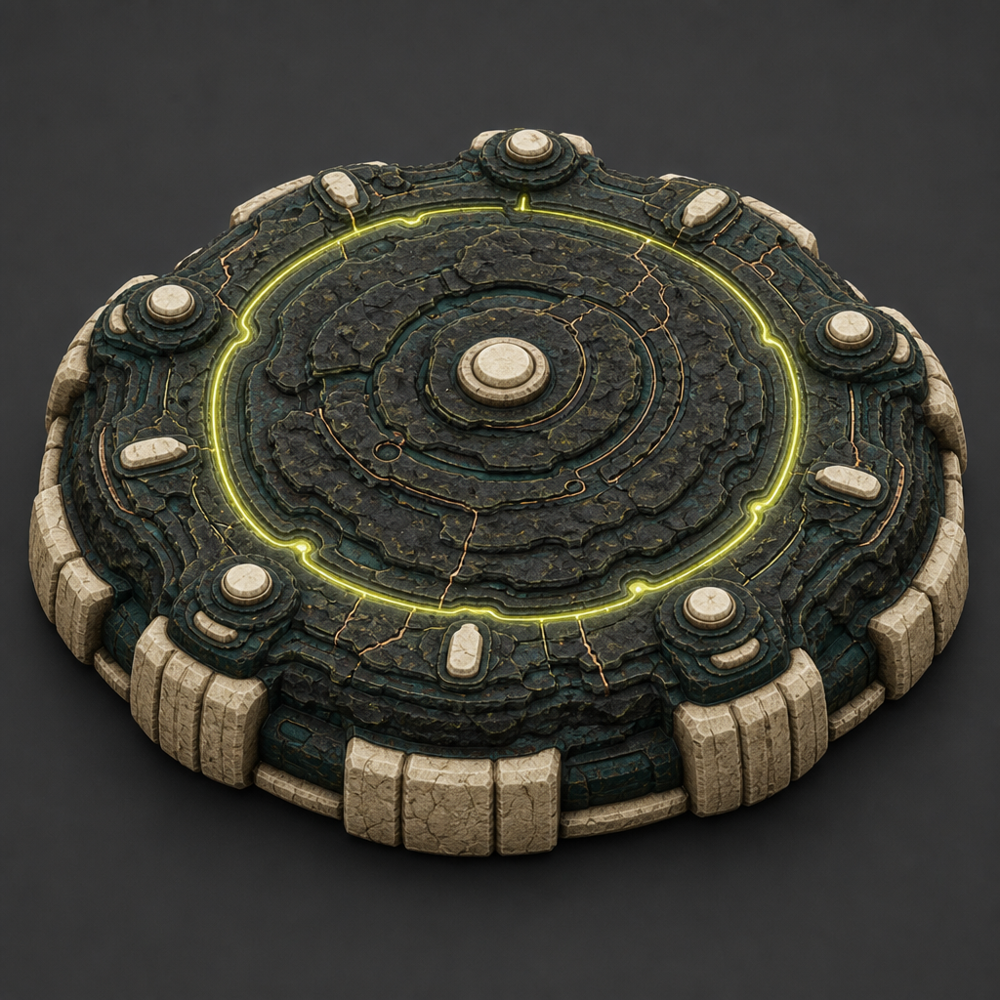
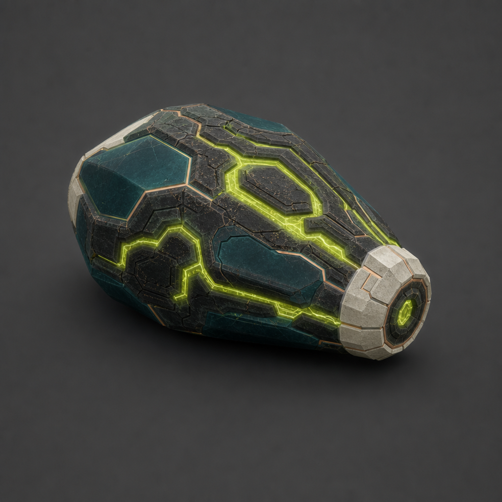

Worlds Cambium Gate
Local design study — synthetic data
The Gate chamber Decision archive

Approved · immutable local fixture
Decision
recorded.
Review the next launch gate
Your approval is recorded. Execution has not been observed.

SYNTHETIC RECORD / GATE–041
MicroBranchUnassignedPhaseUnassignedOrganUnassigned
Scope is explicit. This fixture supplies no branch, phase, or organ labels.
Live Gate connection unavailable · this recorded decision is retained.
Observed pathDecision is not execution.
- DecisionApproval recorded
- GraphNot observed
- ExecutionNot observed
- EvidenceNot observed
Follow the record.
A retained decision proves the decision only. Each later stage needs its own authoritative evidence.
- ObservedThe synthetic approval record is retained.
- Not observedNo graph commit is represented by this fixture.
- Not observedNo executor claim or execution receipt is represented.
- Not observedNo outcome evidence or delivery acceptance is represented.